| Situación clínica | Beneficio |
|---|---|
| Sedación difícil con altas dosis de sedantes IV | Ahorro de hipnóticos y opiáceos |
| Tolerancia / taquifilaxia o politoxicomanía | Sedación eficaz por otra vía |
| Ventanas neurológicas frecuentes | Despertar rápido y predecible |
| Broncoespasmo grave / estatus asmático | Efecto broncodilatador |
| Destete de la VM / posoperatorio cardiaco | Extubación precoz · cardioprotección |
| Efectos adversos de sedación IV (p. ej. propofol) | Alternativa sin acumulación |
Siempre con VM invasiva y según protocolo del centro.
Absolutas
- Hipersensibilidad a isoflurano / sevoflurano.
- Hipertermia maligna (antecedente personal o familiar).
- Fístula broncopleural con fuga > 200 ml/h.
- Distrofia muscular.
- Sedación ligera alcanzable por vía IV.
- TCE con PIC no monitorizada o HTIC no controlada.
Relativas
- Fracaso hepático · insuficiencia renal.
- TCE con PIC monitorizada.
- Antecedentes de convulsiones.
- Exceso de secreciones (no formal: colmata la membrana reflectora).
| Isoflurano | Sevoflurano | |
|---|---|---|
| Inicio | 3 ml/h | 5 ml/h |
| Rango estándar | 2–7 ml/hhasta 15 | 4–10 ml/hhasta 20 |
| Fet objetivo | 0,2–0,7 % | 0,5–1,4 % |
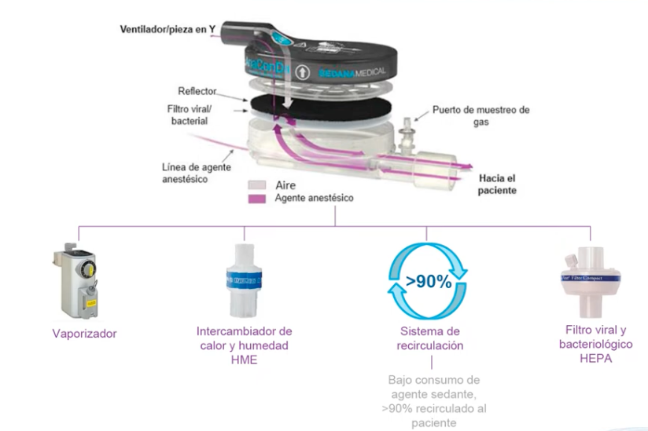
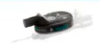
Un solo paciente. Recambio: 24 h mín. – 48 h máx.
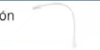
Un solo paciente. Solo si hay monitor de gases anestésicos.
Un solo paciente. Solo si hay monitor de gases anestésicos.
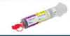
Llenar siempre a 50 ml. Rotular el agente. Reutilizable máx. 3 veces.
Capacidad 500 ml (10 jeringas de 50 ml).
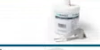
Capacidad 150 ml (3 jeringas de 50 ml).
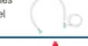
Un solo paciente (tratamiento completo).
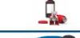
Uno por botella de sevo/isoflurano (desechable).
Reutilizable.
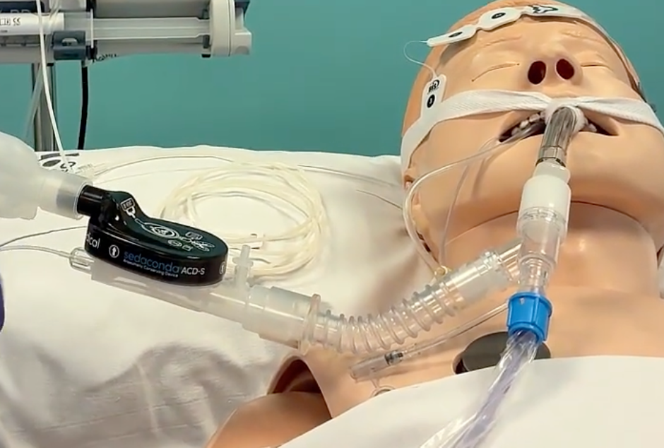
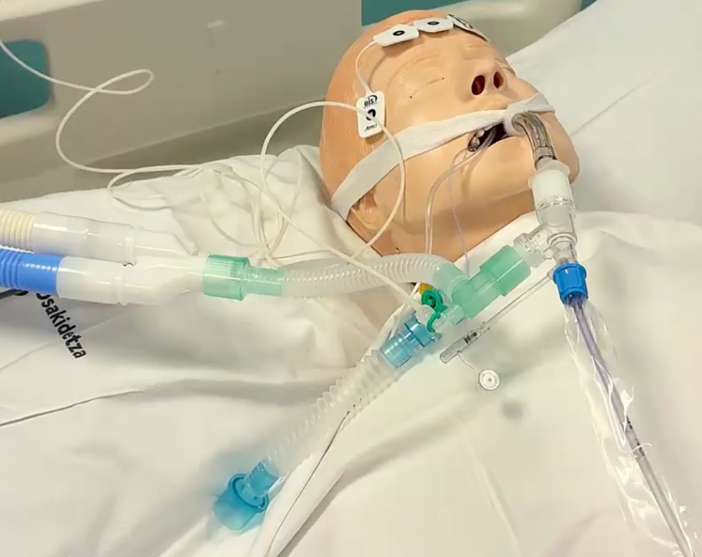
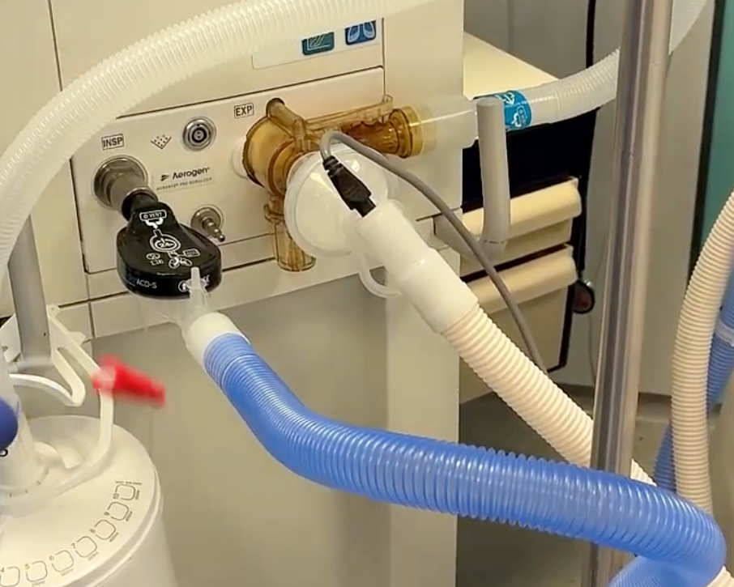
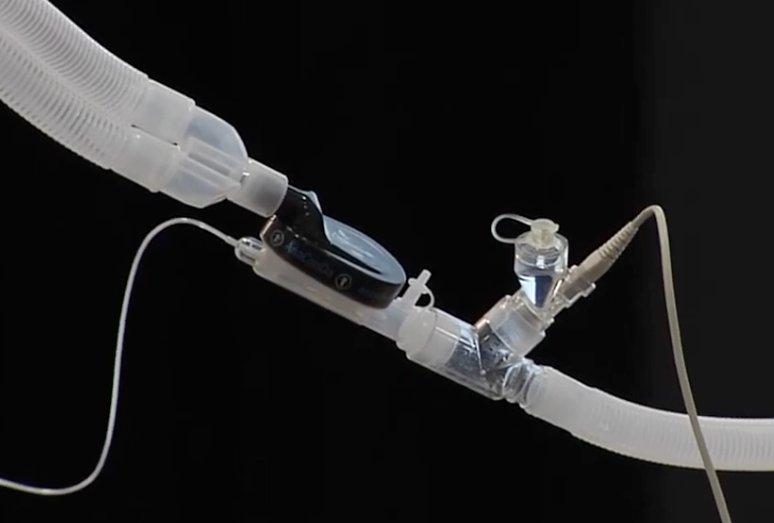
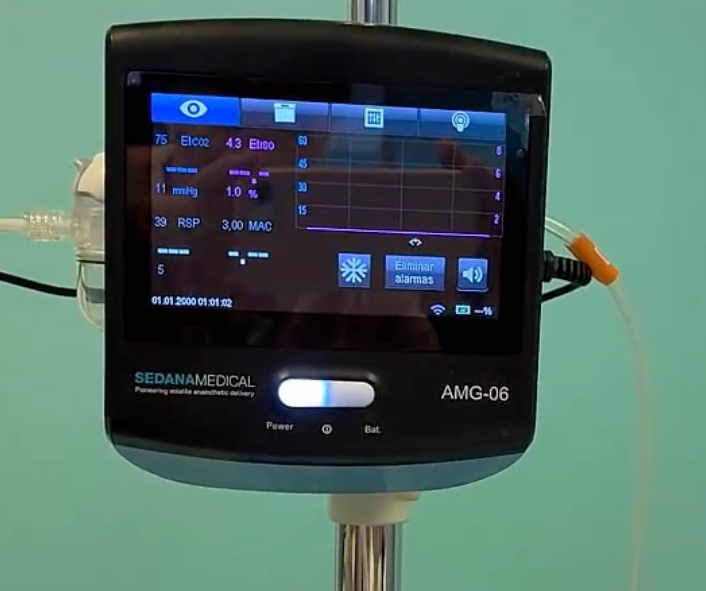
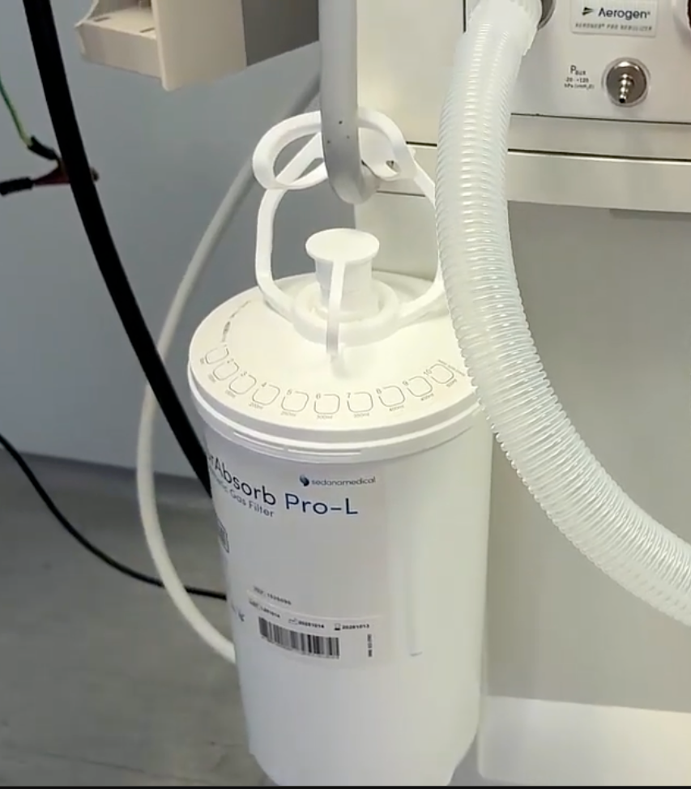
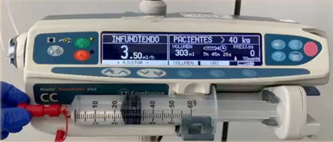
- PosiciónDispositivo conservador entre pieza en Y y TET.
- Jeringa específica de 50 ml con adaptador de carga (no tirarlo entre cargas).
- Bomba de jeringa dedicada.
- Analizador de gases con trampa de agua: FetISO/FetSEVO y EtCO2.
- Filtro depurador FluAbsorb / FlurAbsorb en la salida exhalatoria.
Carga de 50 ml de agente con el adaptador de carga.
Jeringa en bomba dedicada; conexión al Luer-Lock rojo .
Retirar el HME convencional e insertar el AnaConDa entre pieza en Y y aspiración cerrada.
Línea de muestreo al puerto superior del dispositivo y a la trampa de agua.
Tubo del FluAbsorb a la salida exhalatoria del respirador.
Cebado electrónico: purga de 1,5 ml al inicio y 1,2 ml en cada recambio.
- SoloAspiración con sistema cerrado. Si se desconecta el circuito, parar antes la bomba.
- PosiciónNebulizador entre el AnaConDa y el tubo traqueal.
- NuncaNebulizar N-acetilcisteína ni anfotericina B.
- RetiradaOpiáceos IV al 50 %, y después:
- Despertar lento: reducción progresiva. Delirium hiperactivo → dexmedetomidina IV.
- Ultrarrápido: apagar bomba y retirar el dispositivo. Sevoflurano 5–10 min · isoflurano 10–40 min.
O antes si se impregna de secreciones. Cebado de 1,2 ml.
Desechar con el tapón puesto.
Sustituir tras la octava jeringa.
Del analizador de gases.